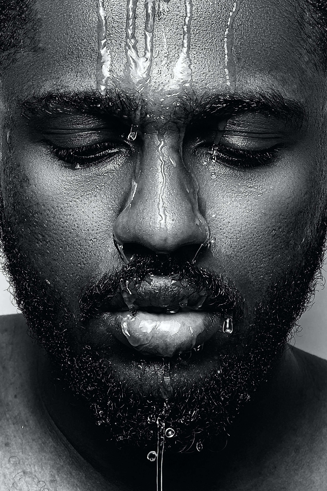
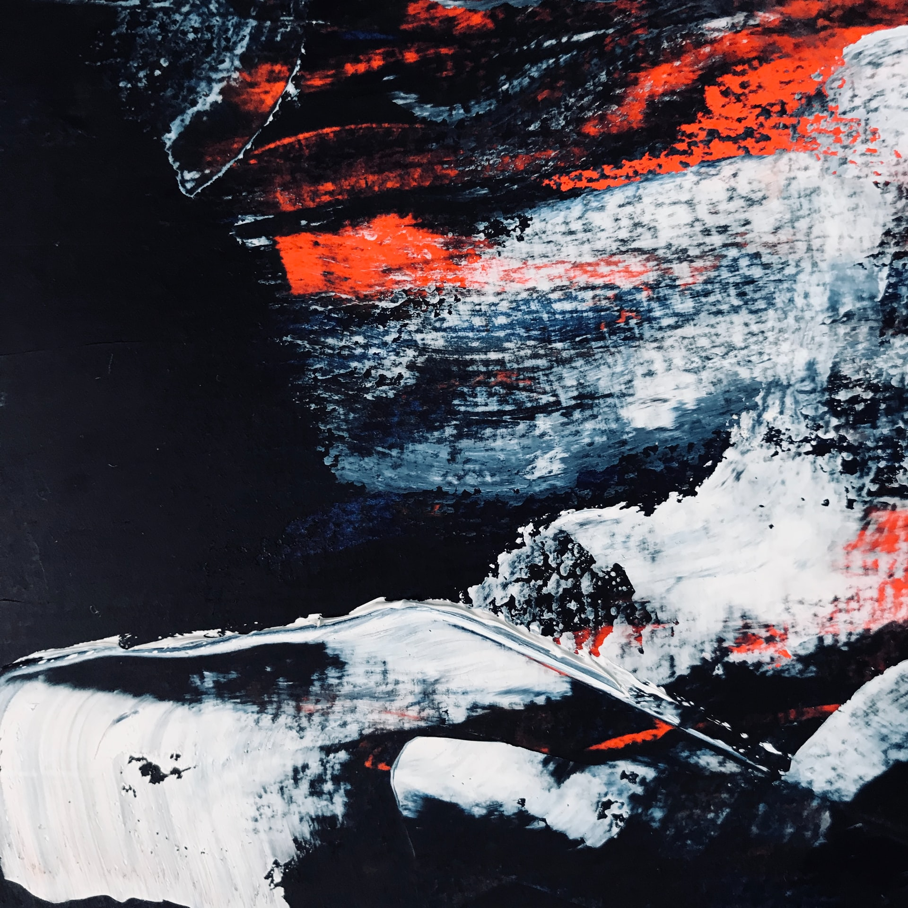

currently on display
(21st July - 31st October, 2021)
We are glad to introduce to you three main body of works within the-summer-mystery-collection tranquility series (2020), lover st night (2020), soulful man (2020).The solo exhibition features unique vintage works, which were never exhibited before. we will be leading an informal discussion presented by POWarts and Art Mamas Alliance offering members a space to share stories, offer support, and exchange ideas and strategies to help each other navigate this difficult time.
VISIT EXHIBITIONSTHE COLORS OF THE SOUL
( Montreal, Canada.March - July 2021.)
In a moment where "remote proximity’’ has become the new normal in every domain, THESE MOTHER OF MINE COLLECTION Paintings places the viewer, artist, curator, and critic at remote algorithmic distance. Feat. selected artworks by Cornelia Sollfrank, Sofia Crespo, Manolo Gamboa Naon , Tom White, Desmond Paul Henry, David Young, David Jhave Johnson, this is a broad-ranging exhibition that traces the desire lines between the analog and the digital, the automatic and intentional, and the past and the present.
VISIT EXHIBITIONS
THE GAME OF LIFE
(21st may - 31st October, 2021)
This online exhibition is a tribute to the STRUGGLing women, children as we battle COVID-19. we pay tribute to Obi Killian who recently passed away from COVID-19. we remenber and love you Obi. we have included four generative artists: Jared S Tarbell, Alexander Reben, Kjetil Golid, and Manolo Gamboa Naon.ON DISPLAY: Due to great success we are happy to announce that the show has been extended until the end of October 2021!.
VISIT EXHIBITIONS

Osinachi - Existence as Protest
OCT. 30TH, 2019 - FEB. 25TH, 2020
We are glad to introduce to you three main body of works within the diary-of-eros-collection series (2019), the forbidden-collection(2018), color me collection series (2020).The solo exhibition features unique vintage works, which were never exhibited before.“Alternatives” Generative Portrait Series New work available as digital, digital on the blockchain and print Exclusively at IFÉ MÉMÉNTOS
VISIT EXHIBITIONS
'THE GENERATIVE ART'.
(Thursday, March 25th, 7pm-8pm:)
Thursday, March 18 , 7pm-8pm: Open gallery hours, I'll be hanging out in the online space so please drop in if you'd like to say hi and chat with other exhibition visitors! - add to Google Calendar Our Tour and meetup for members of the Lady Tech Guild (if you identify as a lady and are interested in 3D tech you're welcome to join to catch the tour or, again, chat with other visitors) - RSVP here on Meetup Thursday April 1, 7pm-8pm: Open hours, add to Google Calendar Thursday, April 8th, 7pm-8pm: Livestream Butoh performance with Sindy Butz and Azumi Oe - add to Google Calendar Thursday April 15th, 7pm-8pm: Artist talk in Mozilla Hubs and closing event - add to Google Calendar Here's a link to the calendar with all events.
VISIT EXHIBITIONS

currently on display
(21st July - 31st October, 2021) We are glad to introduce to you three main body of works within the-summer-mystery-collection tranquility series (2020), lover st night (2020), soulful man (2020).The solo exhibition features unique vintage works, which were never exhibited before. we will be leading an informal discussion presented by POWarts and Art Mamas Alliance offering members a space to share stories, offer support, and exchange ideas and strategies to help each other navigate this difficult time.
VISIT EXHIBITIONS
THE COLORS OF THE SOUL
Montreal, Canada. March - July 2021
In a moment where
"remote proximity’’ has become the new normal in every domain, THESE MOTHER OF MINE COLLECTION Paintings places the viewer, artist, curator, and critic at remote algorithmic distance. Feat. selected artworks by Cornelia Sollfrank, Sofia Crespo, Manolo Gamboa Naon , Tom White, Desmond Paul Henry, David Young, David Jhave Johnson, this is a broad-ranging exhibition that traces the desire lines between the analog and the digital, the automatic and intentional, and the past and the present.
VISIT EXHIBITIONS
THE GAME OF LIFE
(21st may - 31st October, 2021)
This online exhibition is a tribute to the STRUGGLing women,
children as we battle COVID-19. we pay tribute to Obi Killian who recently passed away from COVID-19. we remenber and love you Obi. we have included four generative artists: Jared S Tarbell, Alexander Reben, Kjetil Golid, and Manolo Gamboa Naon.ON DISPLAY:
Due to great success we are happy to announce that the show has been extended until the end of October 2021!.
VISIT EXHIBITIONS
Osinachi - Existence as Protest
OCT. 30TH, 2019 - FEB. 25TH, 2020
We are glad to introduce to you three main body of works within the diary-of-eros-collection series (2019), the forbidden-collection(2018), color me collection series (2020).The solo exhibition features unique vintage works, which were never exhibited before.“Alternatives” Generative Portrait Series
New work available as digital, digital on the blockchain and print
Exclusively at IFÉ MÉMÉNTOS
VISIT EXHIBITIONS
'THE GENERATIVE ART'.
Thursday, March 18 , 7pm-8pm:
Open gallery hours, I'll be hanging out in the online space so please drop in if you'd like to say hi and chat with other exhibition visitors! - add to Google Calendar
Our Tour and meetup for members of the Lady Tech Guild (if you identify as a lady and are interested in 3D tech you're welcome to join to catch the tour or, again, chat with other visitors) - RSVP here on Meetup Thursday April 1, 7pm-8pm: Open hours, add to Google Calendar
Here's a link to the calendar with all events.
VISIT EXHIBITIONS